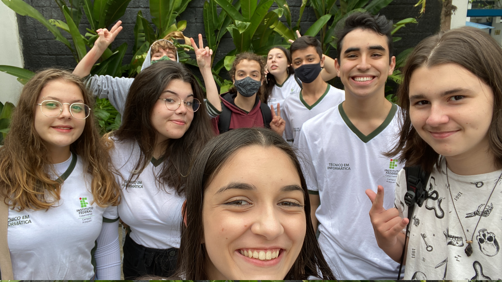
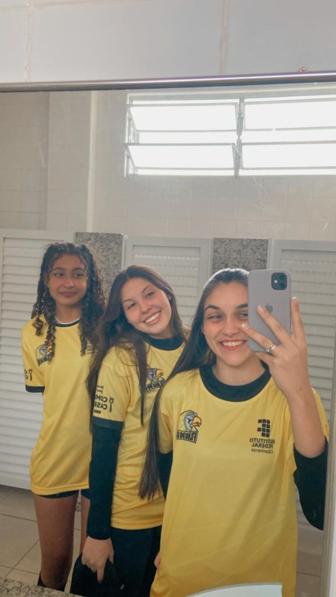

Conheci o IFC por uma amiga em 2021 ( o ano em que eu me formei no ensino fundamental ), pois estava à procura de uma boa escola para fazer meu Ensino Médio. Procurei várias escolas em minha cidade, tanto particulares como públicas, fiz testes para conseguir bolsas de estudo, pois meus pais não tem tanta condição financeira para pagar a mensalidade, tentei em duas escolas, mas em nenhuma das duas deu certo, por conta da renda familiar. Meu pai e minha mãe foram fazer orçamento em uma outra escola, mas também continuava caro. Em outubro desse mesmo ano, fiz minha inscrição para o sorteio aqui do Instituto, só que em novembro (especificamente dia 24) tive a notícia de que não passei em uma outra escola muito boa de Joinville, também com Curso Técnico, e isso me deixou um pouco sem esperança para o sorteio aqui do IF, então me matriculei em uma escola estadual. Mas dia 9 de dezembro meu nome foi sorteado em 48° lugar, isso me deixou muito feliz, pois eu tinha certeza de que se eu entrasse aqui, muitas portas se abririam pra mim.
A primeira semana no IF foi um pouco difícil, pois não conhecia ninguém, apenas meu namorado, e estava estranhando a nova rotina, mas agora já me adaptei, fiz amigos, estou gostando do curso...
Também gostei muito dos professores, sempre bem atenciosos, com boas explicações, cada um com o seu jeito, mas todos são ótimos da mesma maneira. Até agora as matérias que mais me agradaram foram:
 